Godot3游戏引擎入门之一：熟悉编辑器界面

一、前言
Godot 3.1 第一个 Alpha 预览版本已经发布，预览版所有的新特性都已敲定，激动人心，就等着稳定的正式版了！大家可以去官网一探究竟：DEV SNAPSHOT: GODOT 3.1 ALPHA 1 。
本篇内容： Godot 入门之编辑器相关介绍
阅读时间： 5 分钟
永久链接：http://liuqingwen.me/2018/09/03/introduction-of-godot-3-part-1-the-editor/
系列主页： http://liuqingwen.me/introduction-of-godot-series/
二、正文
关于下载
Godot 非常小，我下载的 64 位 Windows 版本总大小不到 40M ，官网下载页面直达： https://godotengine.org/download ，下载 zip 包后解压无需安装，直接使用，不过这里有三件小事情我要告诉大家：
- 下载对应的版本还有发布模板： Godot 支持多个操作系统，注意对应的系统以及架构（ 32 位或者 64 位操作系统），然后就是发布模板（ Export Templates ），这个在下载页面的下方可以找到，当然刚开始使用 Godot 玩玩的时候是没必要下载的，当你需要发布最终产品到 Windows/Mac/iOS/Android 等平台的时候你再下载也不迟，后面的文章我应该会提到模板使用。
- 配置文件夹位置：如果你直接打开 Godot.exe ，那么它的配置文件默认生成在 C 盘目录下（我使用的是 Win10 系统），但是你可以随时改回来，只需要在 Godot 软件文件夹下创建一个
_sc_的文件即可，后面我有截图说明。 - 分辨率设置：如果你和我一样使用的是 4K 高分显示屏幕，那么你在打开 Godot 编辑器后需要进一步设置，这个现在提出来，等会介绍编辑器的时候我有截图作具体介绍。
另外，在官网你会发现一个名为： MONO VERSION (C# SUPPORT) 的下载链接，这个是支持使用 C# 语言来进行游戏编程的，我没怎么使用，看官方介绍，我的建议是没必要下载这个版本，一方面它需要 MONO 的支持，而且 C# 支持现在还不是特别稳定（够用级别吧），另一方面，我觉得 Godot 的脚本语言 GDScript 非常简单，比 Python 还简单没压力，后续文章我会专门介绍。
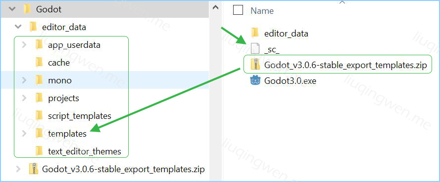
OK ，双击 exe 文件，开始那愉快的 Godot 之旅吧，骚年！ :sunglasses:
界面介绍
首先是开场白
打开 Godot 第一眼是很普通的项目控制面板，这里可以设置编辑器的显示语言：
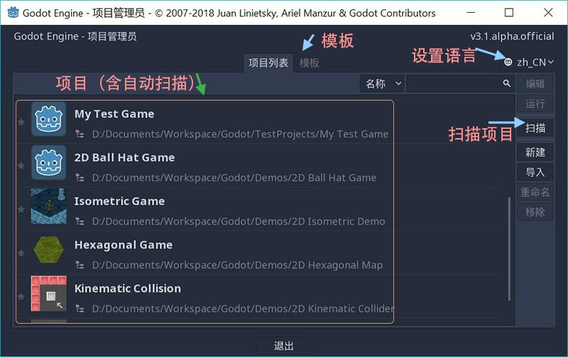
选择创建一个游戏，或者打开已存在的游戏，也可以下载官方的 Demo ，双击进入编辑器主界面：
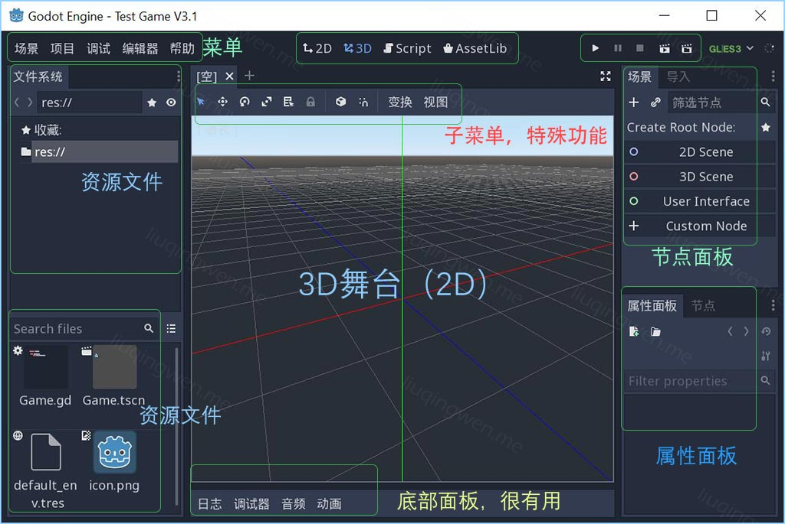
Godot 的主界面很普通，用过 Unity 或者类似工具软件的朋友都不会感觉到陌生。 Godot 默认打开的是 3D 场景，可以通过上方的菜单进行切换，我推荐使用快捷键： 2D场景 -> F1 ， 3D 场景 -> F2 ， Script 脚本窗口 -> F3 ， Help 搜索帮助 -> F4 。
开工前设置
如果你打开 Godot 窗口，发现字体很小，那很正常，因为我们没有设置过字体大小，可以在编辑器 -> 编辑器设置菜单下进行设置：

另外，如果是 4K 高分辨率屏幕，当你迫不及待地添加一个 Node 节点，然后保存，运行，选择刚才保存的场景，游戏开始，你会发现你的窗口不会出现在屏幕的正中央位置，而是右下方，看起来很不舒服，这是因为你没有开启 HIDPI 设置，别急，只需要在项目 -> 项目设置里设置就可以了：
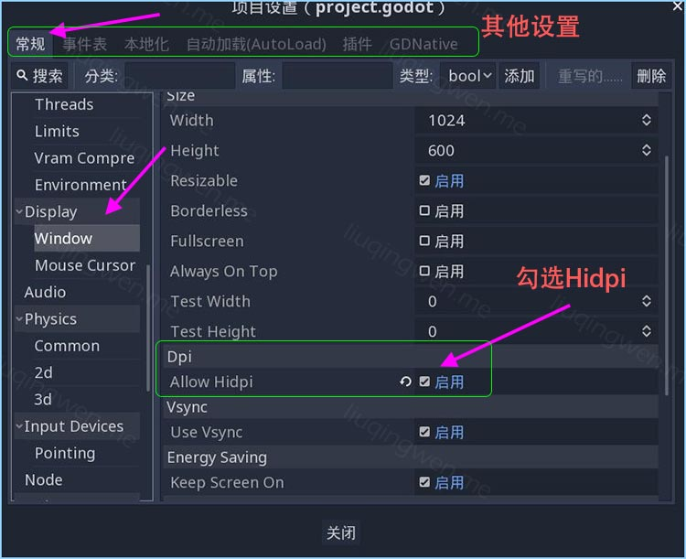
勾选 HiDPI 然后运行你的游戏，就会显示在屏幕正中央了，如果不是 4K 高分屏这一步没必要。
节点和场景
在尝试运行游戏之前，你得创建一个入场场景，然后保存，接着设置为启动场景才能正常运行。添加节点非常简单，在节点窗口上方有个 *+** 号，点击它，或者直接快捷键更方便： *CTRL + A ，会弹出很多预制节点供您选择：

注意， Node 是所有节点的父节点，你可以使用它来作为场景的根节点（ Root ），因为它既是 2D 节点的父节点，又是 3D 节点的父节点，所以你甚至可以使用 Node 来混合 2D 和 3D 游戏节点！当然，我更建议直接使用相对应的节点： Node2D 表示所有 2D 节点的父节点， Spatial 为所有 3D 节点父节点，而 Control 为所有控件的父节点。
除此之外，你会发现，他们都有一套自己的颜色，比如 2D 节点图标是淡蓝色， 3D 节点是粉红色，控件则为绿色，还有一个，深入一点你就会发现，很多 2D 节点名字都对应一个 3D 节点，下面列举几个：
| 3D 节点 | 2D 节点 | 节点名 |
|---|---|---|
| Camera | Camera2D | 相机 |
| Light | Light2D | 灯光 |
| Particles | Particles2D | 粒子 |
| Area | Area2D | 碰撞区域 |
| KinematicBody | KinematicBody2D | 物理学物体 |
| StaticBody | StaticBody | 静态物体 |
| RigidBody | RigidBody2D | 刚体 |
| CollisionShape | CollisionShape2D | 碰撞体形状 |
| Path | Path2D | 路径 |
如上图，你还可以直接通过搜索，更加方便的添加你所需要的节点。在 Godot 中一切基于节点，甚至 Timer 都是一个节点，所以它必须添加到节点树中才能正常使用，这些后续会提到。
属性面板和子菜单
我添加了一个 Node2D 作为场景的根节点，单击命名为 Game ，然后在 Game 根节点下添加一个子节点，可以直接 CTRL + A 来添加，这里我是直接把资源窗口中的 Logo 图片直接拖拽到了场景中，选择 Sprite 创建一个精灵：
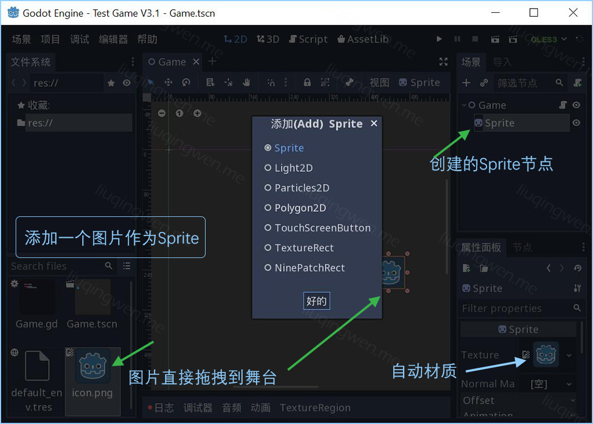
这个时候，右边场景中就会自动创建一个 Sprite 节点，选中这个节点，右下角就是这个节点对应的属性面板，你会发现， Sprite 的 Texture 属性已经自动设置为刚才拖拽的那张 logo 图片了。同时，你会发现在场景的下方多了一个菜单项： Texture Region 材质区域的编辑区，这就是对应该节点的底部栏操作面板，在后续的文章中，介绍动画的时候会经常用到这里的编辑区和菜单。
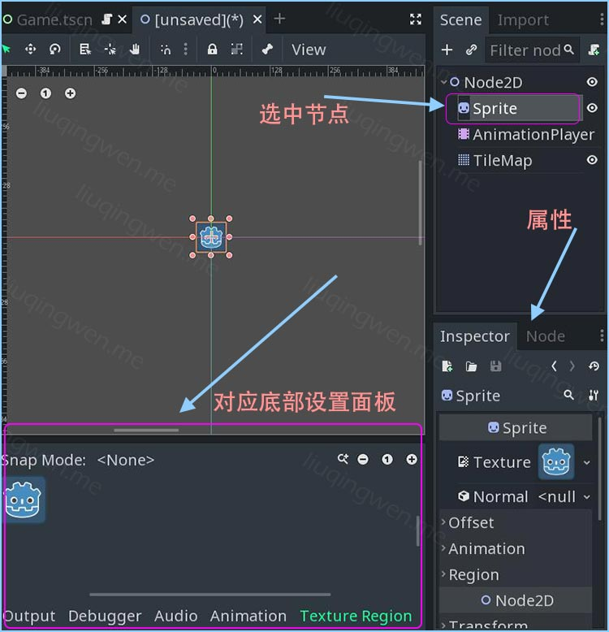
如图，注意场景上方，额外有些子菜单可以进行操作，这些子菜单非常重要，后续对很多节点都会使用到，我这里列举几个类型节点对应的子菜单，如图：
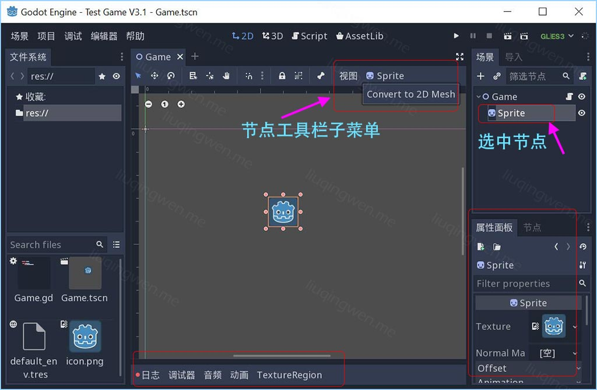
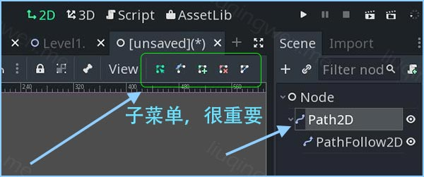
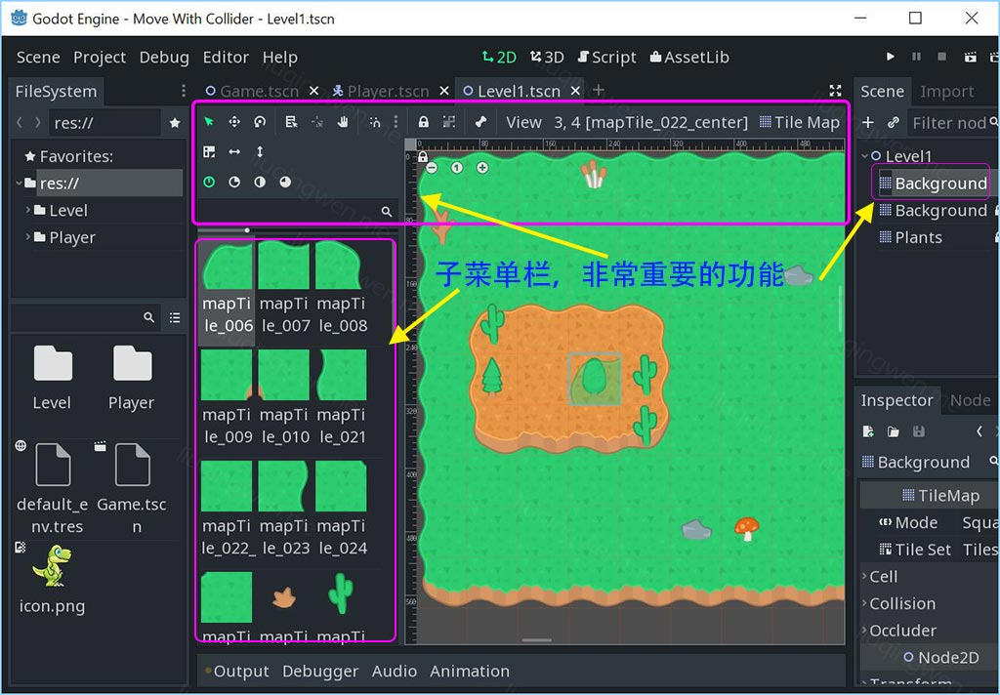
软件界面大概就这些了，常用的功能都应该差不多介绍到位了吧。 :smile:
编程语言
在本系列的第一篇文章中，我说过如果你曾经是 Adobe Flash 的开发者，那么你对 Godot 中一个节点绑定一个脚本的约定会感觉非常熟悉。选择一个节点，在上方的右上角，一个带 + 号的书本按钮，点击便可以给相应节点添加脚本：
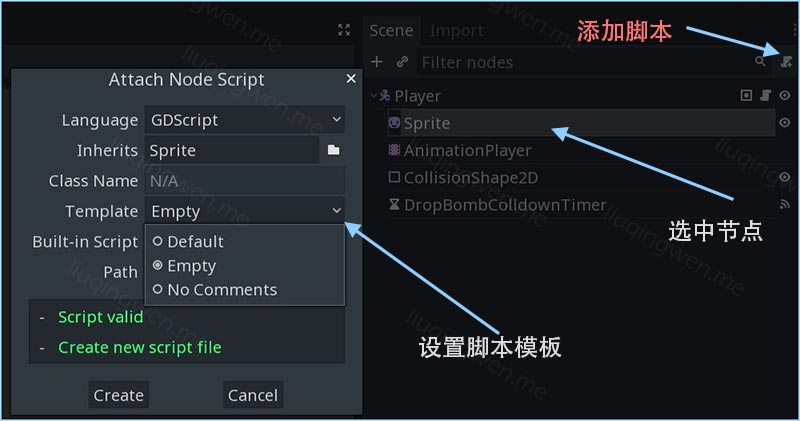
注意：在打开的脚本编辑器里，也有对应的脚本菜单。另外， Godot 非常贴心的一点是，你随时可以按 F4 呼出帮助，然后搜索你想要了解的 API ，查看相关属性和方法，这对新手来说，简单不要太爽啊！
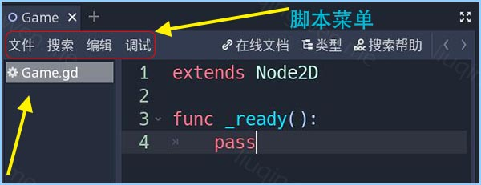
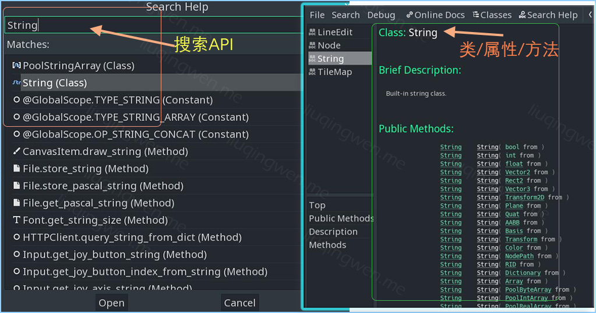
关于脚本语言编程和使用，这个是一个很长的话题了，暂且到此吧，不过我觉得只要有点编程基础的朋友在 GDScript 脚本上是很容易上手的。后续我必须出个专门的文章，专门介绍一下 GDScript 脚本吧。
三、其他
这次就说到这里，大家感觉这个游戏怎样？“什么？什么游戏？”哈哈，偷偷告诉你， Godot 编辑器本身也是由 Godot 引擎打造的一个游戏： Godot’s Engine is a Godot Game itself! ，惊不惊喜，意不意外？ :sunglasses:
本章完结，下次继续，原创不易啊，希望大家喜欢！ :smile:
我的博客地址： http://liuqingwen.me ，欢迎关注我的微信公众号：